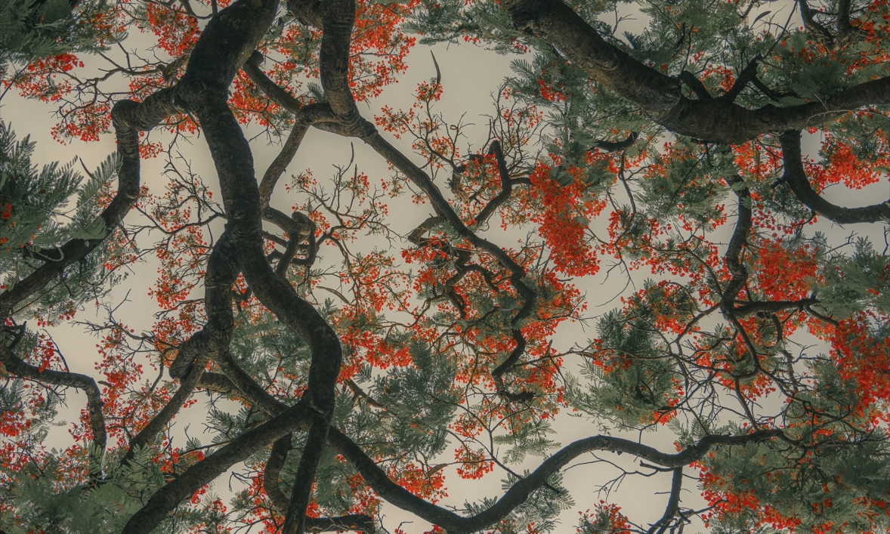

My visual world is somewhere between nature, memory, strange little things, strong colors and dreams.

01
NATURE
forest / flowers / sea / snow / plants
02
MEMORY
vintage / childhood / old objects / warmth
03
STRANGE
ordinary things / unexpected moments / surreal
04
COLOR
deep green / blue / red / orange / golden yellow
05
DREAM
hazy / playful / Y2K / illustration / nostalgia
THE ARCHIVE IS STILL GROWING.
ENTER THE ARCHIVE →